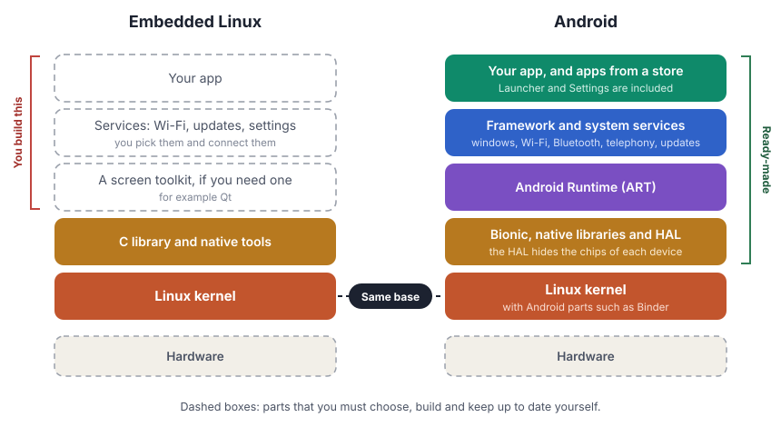
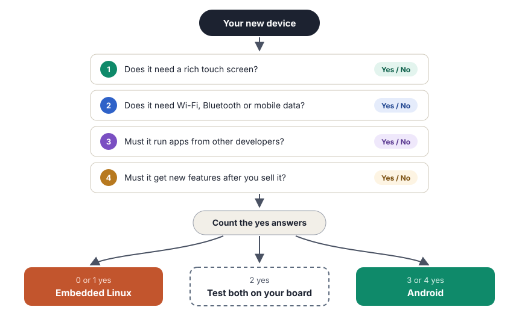

Android is Linux plus a large ready-made layer for screens, apps and wireless. Choose Android when your device needs that layer.
Many devices that are not phones run Linux inside: smart TVs, set-top boxes, medical monitors, payment terminals and car dashboards. A company that builds a new device must choose the software base early. One choice is a custom build of Linux. The other choice is Android, which also runs on Linux.
The article that I read asks a simple question: when is Android the better base for a device? Here is the answer in simple words, with what changed since the article came out.
Same base, different build
Android and embedded Linux are not opposites. Android stands on the Linux kernel. The difference is in the layers above the kernel.
With embedded Linux, you start with the kernel and a C library. Then you choose and build all the other parts: the screen toolkit, the Wi-Fi manager, the update system and the app. With Android, these parts already exist and already work together.

Embedded Linux is a plot of land. You can build any house that you want, but you must build every wall yourself. Android is a furnished apartment. You move in on the first day. You can still paint the walls and move the furniture, but the plan of the building is already fixed.
A small shed does not need an apartment. A family home with many visitors does.
Which one fits your device?
The article starts with the purpose of the device, not with the software. Answer four questions about the device, then count the yes answers.

The last question is easy to forget. A device that only does one job today can get a new job next year. Android was made for that: new apps and new features can come to the device after you sell it.
What Android gives you, ready-made
| Area | Embedded Linux | Android |
|---|---|---|
| Touch screen | You choose a toolkit and design every screen | A complete touch interface with standard parts |
| Wireless | You connect Wi-Fi, Bluetooth and mobile data yourself | One connection manager for all of them, also in the settings screens |
| Apps from others | No standard way | A standard SDK and a standard way to publish apps |
| Developers | Mostly C and C++ experts | Java and Kotlin developers, plus C and C++ through the NDK |
| Phone calls and SMS | You add a telephony stack | Built in |
A Linux expert can say: "Linux can do all of this too." That is true. The real question is how much work it is. On Android, the work is already done.
Common worries, answered
People who know Android from phones often think that it is too heavy for a device. Most of these worries are about the full phone build. A build that is made for one device is different.
The article came out in 2013. Since then, these things changed:
- A new runtime. Android 5.0 (2014) replaced the Dalvik runtime with ART. ART compiles app code to machine code, so apps start and run faster.
- Kotlin. Since 2019, Google recommends Kotlin first for Android apps. Java still works.
- Easier updates. Project Treble (Android 8.0, 2017) put the code of the chip makers behind a fixed interface. Later, the Generic Kernel Image (GKI) made the kernel the same on many devices. Both changes make updates faster for device makers.
- Editions for devices. Google made Android Things for small connected devices in 2018 and stopped it in 2022. But Android for cars (Android Automotive OS) and Android for TVs grew strongly.
- Better Linux tools. The Yocto Project and Buildroot make custom Linux builds easier than before.
More code means more places where a bug can hide. A full Android build is much larger than a small Linux build. Thus, it has a larger attack surface.
But Android also brings strong security parts that you do not need to build: an app sandbox, SELinux rules, verified boot and a monthly security bulletin. On embedded Linux, you must design and build each of these yourself.
On both, the most important rule is the same: plan how you will send security updates to the device for all the years that people use it.
The question of the article is still the right question, more than ten years later. Start with the job of the device, not with the software.
For a device with a screen that people touch every day, and that must change over time, I choose Android. For a small device with one fixed job and no screen, I choose embedded Linux. In the middle, I build a small test on the real hardware before I decide.
Key terms
- Embedded device
- A device made for a small set of jobs, for example a TV box or a medical monitor.
- Embedded Linux
- A custom Linux build that contains only the parts that one device needs.
- AOSP
- Android Open Source Project. The free source code of Android.
- Bionic
- The C library of Android.
- ART
- Android Runtime. It runs the code of Android apps.
- Attack surface
- All the places where an attacker can try to get in.
To learn how the Android layers work, start with What is AOSP? in the Inside Android course.